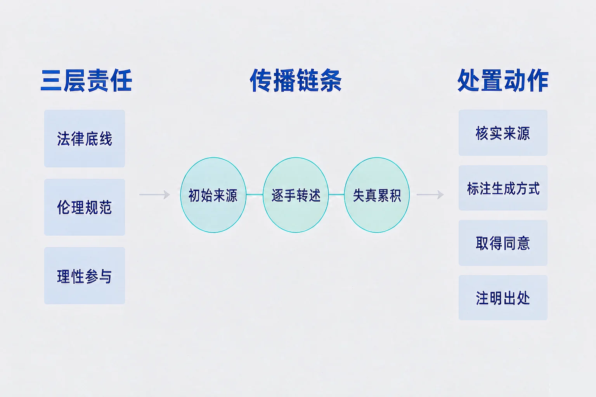
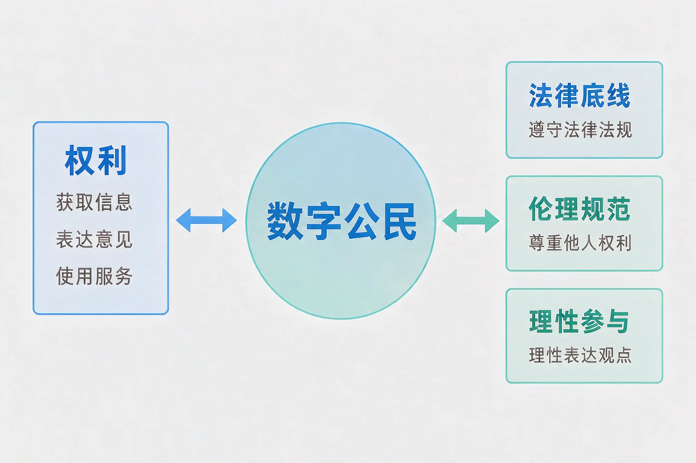
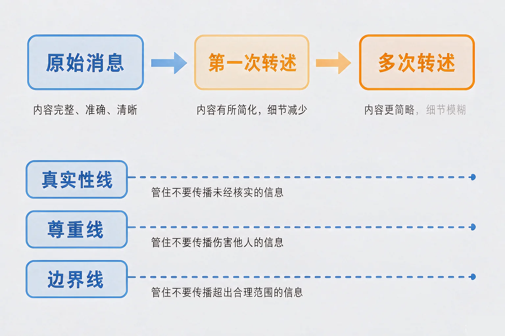

Gallery
v1.0.0 · skill v7.22.0
初中九年级 · 人工智能与智慧社会
一条看不出出处的群消息，半小时转遍几十个群——我到底该不该转出去？

选一个你真正好奇的问题，后面的实验都会围着它转。
选择或输入后，这节课会围绕你的问题展开。
先凭直觉选一个，选完立刻看到解释——错了也没关系，正好知道要重点听哪里。
1. 群里有人转发一条「下周作息要调整」的消息，附了一张看不清出处的截图，还说是朋友的朋友发的。下面哪种做法更合适？
判断的第一件事是来源能不能追溯。截图可以伪造，"朋友的朋友"等于没有来源。错因提醒：常见错误是误认为「不是我编的就不用负责」——传播本身就是参与，链条上每一手都在放大后果。
2. 关于「数字公民」这个说法，下面哪一句更准确？
数字公民强调的是成员身份，权利和责任同时存在，与熟练程度无关。错因提醒：容易把「会操作」当成「负责任」，这是把技能和素养搞混了。
3. 一条消息被很多人反复转述之后，内容常常和最初不一样。最合理的解释是：
失真来自转述过程本身，不一定有人故意造假。转发的人越多、越不核实，走样越厉害。错因提醒：不要一看到走样就认定有人恶意篡改，那样会忽略掉真正可以控制的那个环节。
为什么要学这一课？你已经知道数据可以被采集、传输和存储，也学过怎么识别风险、怎么配置防护。但那些办法解决的都是「别人来拿走我的数据」——它们回答不了另一个问题：我在数字社会里做过的事，会带来什么后果。所以我们需要一套判断「我该怎么做」的准则，这就是信息社会责任，也是「数字公民」这个身份的核心。
数字公民是指：在数字社会中生活、学习、参与的成员。这个身份的权利和责任是一起出现的——你有获取信息、表达意见、使用服务的权利，也要承担相应的责任。
① 法律底线
不造谣不传谣，不侵犯隐私与肖像，不侵害知识产权。
② 伦理规范
尊重他人，诚实表达，不利用信息不对称去欺骗。
③ 理性参与
核实来源，独立思考，不被情绪推着走。

🔍 深层理解 换个角度再看一遍这件事，看看能不能说出背后的原理。
看见它：同一句话，在教室里说完就散了；发到网上会长期留存、能被检索、能被无限复制。载体变了，后果的量级也变了。
比较它：技术防护解决「别人能不能拿到我的数据」，信息社会责任解决「我拿别人的数据去做了什么」。一个是守门，一个是自律，缺一不可。
迁移它：现实生活里，随手转述一句没核实的传闻也会造成麻烦；数字社会只是把这件事的速度和范围放大了很多倍，判断的道理没有变。
选好转发的速度和两个开关，然后点「走一轮」逐步观察，或者「跑到底」一次看完。
责任不是抽象的态度，它总能落到一个具体动作上。把动作找出来，判断才有地方可依。

三个高频误解：一是误认为「我只是转发，责任在原发者」——传播本身就是参与，链条上的每一手都在放大后果；二是把「我在开玩笑」当成免责理由——玩笑的判定看的是对方受到了什么影响，不是说话人的意图；三是误认为「网上公开的就能随便用」——公开可见不等于授权使用，转载要注明出处，涉及他人影像还要先取得同意。
🔍 深层理解 换个角度再看一遍这件事，看看能不能说出背后的原理。
解释它：为什么失真会累积？因为转述不是复制，每一次转述都是一次「理解之后再说一遍」——记不清的部分会被补上，补上的部分就成了新的「事实」。
比较它：技术手段能帮你验证来源是否可信，但要不要点「转发」这个动作，只能由你自己决定。工具管得到链路，管不到那个按钮。
点下面的内容品类，就相当于点开了一条该类的推荐。观察四类占比和视野广度指数怎么变。
推荐流里的内容分布
题目：班级群里出现一条消息，说下周作息有调整，附了一张看不清出处的截图。请你判断：转还是不转？并说明理由。
不少同学误认为「先转出去，反正后面会有老师澄清」。问题在于：澄清只能沿着链条回传，而链条在爆发式转发之后已经散开了，澄清追不上；这正是模拟器里失真度冲到 70 分以上之后才补救的代价。另一处容易搞混的是把「我没有恶意」当成免责条件——判断的是造成的影响，不是出发点。
先凭直觉选一个，选完立刻看到解释——错了也没关系，正好知道要重点听哪里。
1. 下面哪句话是正确的？
责任看的是行为本身：转发是一次传播行为，链条上每一手都在放大后果。错因提醒：最常见的就是误认为「不是我编的就没有责任」，这个想法会让你成为传谣链条里最省力的那一环。
2. 小李把一段同学之间的聊天记录截图发到了班级群里，说「让大家看看」。主要问题在于：
聊天记录属于他人不愿公开的私人信息，公开前必须取得同意，这与截图是否清晰无关。错因提醒：容易搞混「在群里说过」和「可以被公开」——小范围的交流不等于授权对外发布。
3. 一篇用人工智能辅助生成的文章，发布时最应当做的是：
标注生成方式，是让读者知道自己在读什么；核实事实，是对内容负责。这两件事一起做才算到位。错因提醒：把「通顺」当成「真实」是很常见的误认为——生成的内容读起来越顺，越需要你自己去核对。
场景：公众号要发一篇科普文章。它由人工智能辅助生成，素材从网上转载，配图里有同学的照片，原始出处一时找不到。请决定做哪几个动作，然后点评估。
① 这个情境里，责任落在四个维度上
② 可以做的动作
写下来，说给同桌听：如果只允许保留三个动作，你会留哪三个？剩下没有覆盖到的那个维度，你打算用什么别的办法处理？
先凭直觉选一个，选完立刻看到解释——错了也没关系，正好知道要重点听哪里。
1. 群里有人发消息说「附近有同学走失，请帮转」，但没有留联系人，也没说具体地点。合适的做法是：
真实性线同样适用于看起来「出于好意」的消息——善意不能替代核实，虚假的求助同样会造成伤害。错因提醒：常见错误是误认为「出发点是好的就不算传谣」，判断依据仍然是来源能不能核实。
2. 一位同学发现，网上关于自己的一个说法已经被人转到很多群里，很难全部收回。这件事最值得记住的是：
可复制、可检索、可长期留存，是数字内容的基本特点，所以责任的落点在发布之前。错因提醒：把「转发的人多」当成可信度证据，是典型的从众误认为。
3. 某位同学长期只看同一个品类的内容，视野广度指数掉到了 30 以下。最有效的改善办法是：
推荐分布来自你自己的点击，拓宽信息面是可以由自己完成的一步。错因提醒：容易误认为这是算法的问题、与自己无关——正好相反，每一次点击都在给它指令。
回到开头那条消息：它的真假也许一时查不清，但「要不要转发」是当下就能决定的一件事。在模拟器里我们看到，选择核实的人少转了很多人，却让信息一直没有走样——这就是一个数字公民在链条里的作用。
给别人讲一遍：请用「来源、失真、责任」三个词，说明为什么「先转了再说」不是一个小问题。
三层练习，做完第一、二层就算通关；第三层留给愿意继续探索的同学。
⭐ 基础巩固（必做）
⭐⭐ 能力应用（必做）
⭐⭐⭐ 迁移挑战（选做）
左边是学它之前要先会的，右边是学会之后可以继续探索的，下面是同一领域的伙伴知识。
图谱正在加载：首次进入需下载知识索引（约 1–3 秒），加载完成后本行会自动消失。